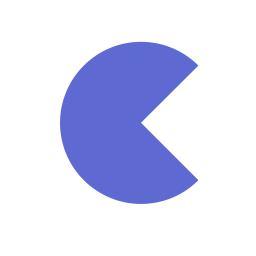
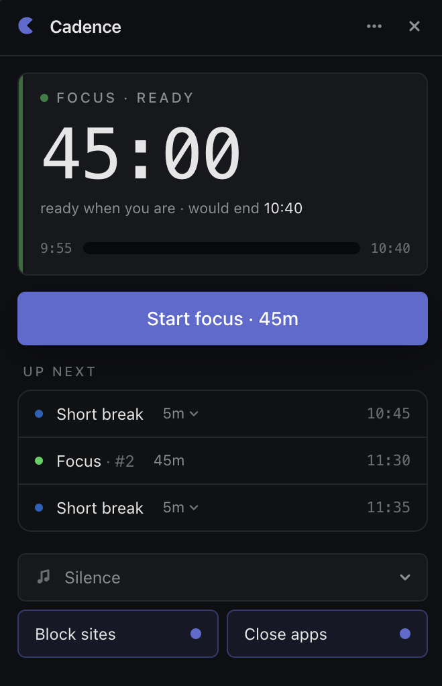

Cadence
A focus timer for macOS that actually keeps you focused.
Block distracting sites. Close the apps you don't need. Get back to work in one click.

Lives in the menu bar
The whole app fits under a small purple glyph at the top of your screen. Out of the way until you need it.
Background sound, optional
Pick silence, brown noise, or a low ambient loop while you work. Nothing autoplays unless you ask for it.
Native macOS
Built for macOS — respects Do Not Disturb, plays nicely with Spaces, and starts in well under a second.
Yours, on your machine
No account, no sync, no telemetry. Settings live in a single JSON file on disk.